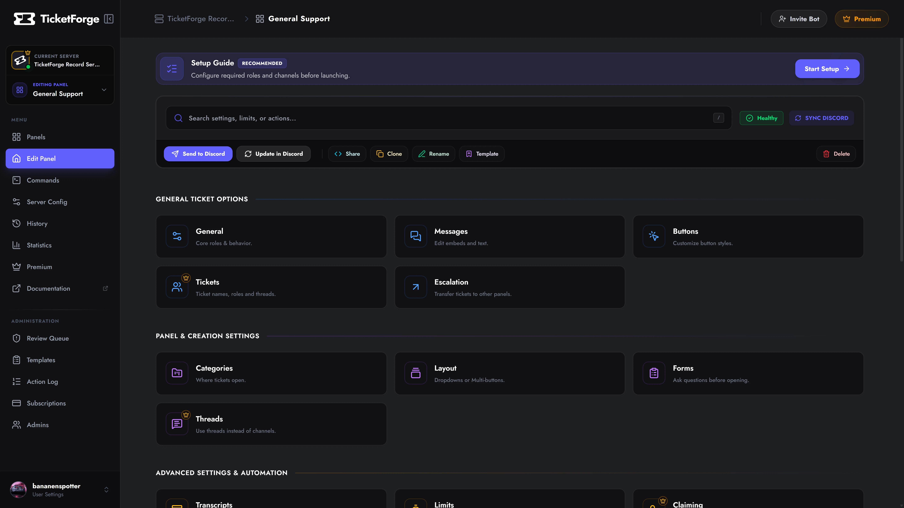

Dashboard Overview
The TicketForge Dashboard is the command center for your support system. TicketForge provides a modern, responsive web interface to visualize and configure everything.
2. The Dashboard
Once you select a server, the Sidebar becomes your main navigation tool. It is divided into logical sections to help you manage different aspects of the bot.

| Section | Description |
|---|---|
| Panel Editor | The Core Feature. Create reaction panels, edit embed messages, configure forms, and set up ticket logic. Most of your time will be spent here. |
| Commands | A permission manager for slash commands. Disable specific commands (/close) or restrict them to certain roles/channels. |
| Server Config | Global settings that apply to the whole bot, such as Bot Language, Dashboard Access Roles, and Interaction Blacklists. |
| History | An audit log of all changes made via the dashboard. Useful for seeing which admin changed a setting. |
| Statistics | Visual charts showing ticket volume, claim times, and staff activity. (7 days history for Free, Unlimited for Premium). |
| Premium | Manage your subscription, view invoices, or activate a license key. |
3. Navigation & Workflow
The dashboard is designed for speed.
Breadcrumbs
Located at the top left (e.g., My Server > Support Panel > Messages).
* Click My Server to go back to the server settings.
* Click Support Panel to switch back to the main settings grid for that panel.
Quick Switcher
In the top-left of the sidebar, clicking the Server Name opens a dropdown. This allows you to jump to a different server without going back to the main menu.
Mobile Support
The dashboard is fully responsive. You can configure panels, edit messages, and manage subscriptions directly from your phone's browser. The sidebar collapses into a "Hamburger Menu" on smaller screens.
4. Saving Your Work
The dashboard uses a Draft System. Changes are not applied to the live bot until you explicitly save them.
Safe Save System
When you modify a setting, a Save Bar appears at the bottom of the screen.
- Save Changes: Pushes the update to the database and the live bot.
- Discard: Reverts all changes made since the last save.
If you try to close the tab with unsaved changes, the browser will block you with a confirmation warning.
Troubleshooting
"403 Forbidden" Error? This usually means you lost administrative access to the server, or your login session expired. -> Log Out and Log In again to refresh your permissions.
Dashboard not loading? Check our Status Page to see if the API is experiencing issues.